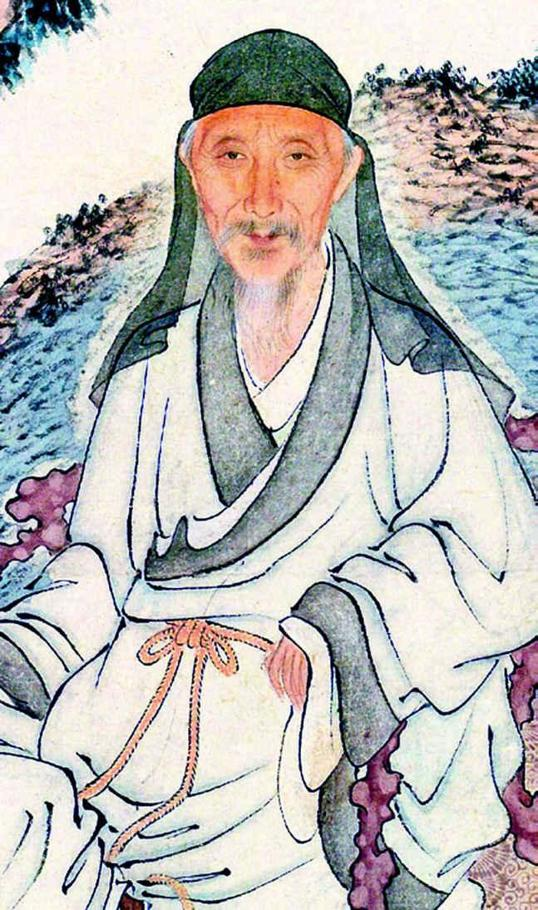
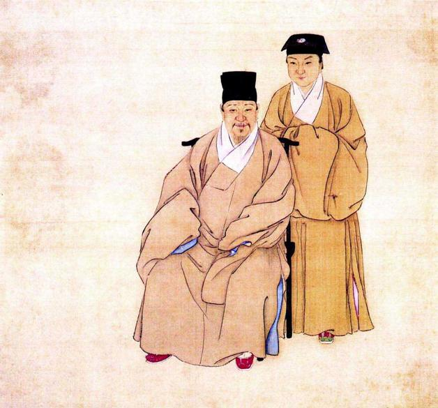
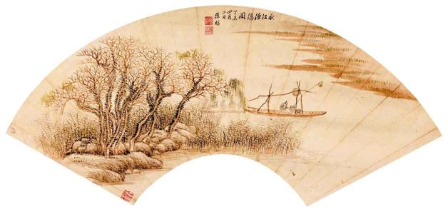

四
总之，甲乙两年，一北一南，清人的所遇所见，恍若两国。民国初，孙静庵与钱基博先生（钱钟书父）讨论修撰《明遗民录》的意义，后者讲了一句话：“岂可使笑中原无人？”[14]当时确有这种状况——直至抵于扬州、遇见史可法前，清人大概一直暗笑“中原无人”，在这以后，才猛然发现并非无人，而是很有“人”，顶天立地，踵继而来。
南方、北方不是没有相同点，比如南京和北京一样，都上演了投降一幕；但关键在于，还有不同。率众武装抵抗是一种，个人自决绝命又是一种。
1645年下半年，对中国来说，不只有悲惨，也随时闪现悲壮。一批从品格到才具都很优秀的人，自主选择了有尊严的死。如弘光朝初期大学士、名臣高弘图，他为马士英、阮大铖等排挤，四疏求退，因是北方人，辞职后无家可归，而流寓绍兴，“两浙相继失守，弘图逃野寺中，绝粒而卒。”[15]他有一孤子相依为命，死前，专门托与谈迁（在南京时，谈迁为其幕客），然后独自避入竹园寺，从容绝食。如徐汧，他是复社领袖，阮大铖最后图谋陷构而未遂者；南都破，他留书两个儿子：“国事不支，吾死迫矣。”决心已下。及闻苏州不守，即于夜中自缢，但被仆人发现解救，未果。一个朋友试图劝之：“公大臣也，野死可乎？”他的回答相当凄凉：“郡城非吾土也，我何家之有？”终于闰六月十一日，“肃衣冠，北向稽首，投虎邱之新塘桥下死。”[16]他的行为已超越了个人之身死，而成为一次有关人格与民族精神的展示与垂范。如杨廷枢，复社之长，名满天下，国亡隐山中，卒被抓获，“大骂不屈”，押解时于舟中血书：
余自幼读书，慕文信国（文天祥）先生之为人，今日之事，乃其志也。四月廿四日被缚，饿五日，未死。骂贼，未杀。未知尚有几日未死。遍体受伤，十指俱损。而胸中浩然之气，正与信国燕市时无异。俯仰快然，可以无憾。觉人生读书至此，甚是得力！留此遗墨，以俟后人知之。[17]
旋被害。读血书，可知杨廷枢执着于死的选择，意在“以身作则”，彰显心中存之已久的信念，上祧先贤、下启后人，俾使读书人精神使命薪火相传。
一时，勇毅之士层出不穷，果敢故事书之不尽。其中令人至为感佩，是当此重大关头，诸君子“同声相应，同气相求”，联翩联袂、彼此追随、同赴大义。读这些事迹，我都一再想到明代所特有的分别都达于极致的“两面性”——一面朽烂污秽无以复加，一面勃然向上、刚健劲拔之气直冲霄汉。
典型者如夏允彝，“闻友人徐石麒、侯峒曾、黄淳耀、徐汧等皆死，乃以八月中，赋绝命词，自投深渊以死。”[18]同志皆死，则己即不能独存。侯峒曾之子侯玄涵，后来为他作传，详叙了经过：
镇帅以素闻公名，必欲致一见，且曰：“夏君来归，我大用之，即不愿，第一见我。”公乃书于门曰：“有贞妇者，或欲嫁之，妇不可，则语之曰：‘尔即勿从，姑出其面。’妇将搴帷以出乎，抑以死自蔽乎？”遂尽斥其家人，赋诗曰：“少受父训，长荷国恩，以身殉国，无愧忠贞。南都继没，犹望中兴；中兴望杳，安忍长存！卓哉吾友，虞求、广成，勿斋、绳如，慤人、蕴生，愿言从之，握手九京。人谁无死，不泯者心。修身俟命，敬励后人。”诗竟，自投于渊。尸浮水上，衣带不濡。[19]
所提到的几位“卓哉吾友”，虞求为徐石麒，前吏部尚书，自缢死；广成为侯峒曾，投水死；勿斋即徐汧；绳如为吴嘉胤，南都事变时他出使在外，闻讯折返，拜方孝孺祠后投缳，为家人所阻，及薙发令下，乃再拜方孝孺，自缢死；慤人为何刚，与史可法共事，死扬州；蕴生为黄淳耀，与侯峒曾共同领导了嘉定起义，失败，偕弟黄渊耀缢于馆舍。遗诗中，夏允彝首先陈说自己所以活到今日，是“南都继没，犹望中兴”，而杭州投降后，则尽弃此念。此念一去，继续存世于他即无意义，想到同志好友多数已眠地下，不禁心向往之，愿和他们“握手九京”，九京亦即九泉。最后两句，尤为大哉：“人谁无死，不泯者心”，身死有什么，重要的是心和精神不死；“修身俟命，敬励后人”，死非为个人故、不是求自我解脱，而是以这行为激发、醒觉后世，我们今天的话是“为民族和历史献身”。在他表率、垂范下，不过两年，他的公子、天才少年夏完淳也因抗清失败，以十七之龄慷慨就义。
这种相携赴义的情形，除友朋之间、父子之间，亦见于师生。
刘宗周不但为明末名臣，更是儒学一大宗匠，世称念台先生，所创蕺山学派，门生众广、硕学辈出。他死后，诸弟子于康熙年间为刻遗著凡四十卷，卷前列《蕺山弟子籍》，叶廷秀、祁彪佳、熊汝霖、陈子龙、周鏣、陈洪绶、黄宗羲、魏学濂、张履祥、陈确、仇兆鰲、万斯同、毛奇龄……如许卓砾英才，悉列蕺山门下，豪华夺目，令人屏息。
《甲申朝事小纪》：
顺治二年五月，王师下江南。六月，下杭州，潞王常淓降。宗周方食，闻报，推案恸哭，自是遂不食。有以既谢事劝者，宗周曰：“北都之变可以死，可以不死，以身在田里，尚有望于中兴也。南都之变，可以死，犹可以不死，主上自弃其社稷也，尚望继起有人也。今吾越又降矣，身不在位，不当与土为存亡耶？”[20]
和夏允彝一样，他也谈了关于死的决定和思考。北京之变时不死，是因一身无现职，二尚有望于中兴；南京之变时不死，是因朱由崧自弃社稷，未足为之放弃国家的希望；如今，杭州亦降，国土沦亡，身何所托？可以看出，他的决定冷静而有条理，是一步步推究而来，故而无可动摇。他于澄明的反思下，以内省者的安详，去完成毕生最终的求义：“出辞祖墓”，从西洋港跃入水中，水浅未死，为人扶出；之后开始绝食，绝食二十三天，仍未死；继而禁水，连续十三天滴水不沾，其间“与门人问答如平时”[21]，闰六月八日，与世长辞。
我于书行之间，渐次跟踪刘宗周三十六天的漫长死亡经历，一个内外静穆的思想者雕像，凿然而立。我们景仰托尔斯泰、甘地那样的人物，以为中国不曾在精神专注、肃然、坚忍及强大上有堪与比美并论者，刘宗周的死亡仪式以其不动如山的内心世界，完全扭转了我的看法。由此，进而追询文化与精神上我们如今为何难以摆脱一种“自卑”或不足，方意识到是因刘宗周这样的人和事，离我们已太过遥远，而目力所及却无从寻找这种沉潜的意志和自持力。从满清起，对知识者的精神戕害和人格矮化持之以恒，致其一如龚自珍“病梅馆”中的病梅。就此言，刘子之死对中国精神史而言实有深远的象征意味。
蕺山门生，死者甚夥。祁彪佳甚至死在老师前头：

晚年黄宗羲。
晚年在《自题》中，黄宗羲将自己一生划为三段：“初锢之为党人，继指之为游侠，终厕之于儒林。其为人也，盖三变而至今。”“党人”指少年时代因父亲黄尊素身陷党祸举家受迫害，“游侠”即明亡后长期抗清和流亡生涯，“儒林”指五十岁后致力于历史反思和思想批判。

夏允彝、夏完淳父子。
夏允彝，明末著名士大夫，与陈子龙共创几社，并入复社后为松江府复社之长。乙酉清军下江南，八月中赋《绝命词》，自沉以死。子夏完淳，幼以神童名，“为文千言立就，如风发泉涌”，父死后如孤魂野鬼，矢志反清，旋被捕，被洪承畴杀于南京，年方十七。

秋江渔隐图。
徐枋作于丁未年（1667）。乃父徐汧乙酉殉国，枋欲从死，父止之，遂以遗民终一世，艰贫备尝。
北兵至杭州，彪佳约刘宗周起义，不果。及贝勒檄诸生投谒，彪佳语妻商氏曰：“此非辞命所能却，若身至杭州，辞以疾，或得归耳。”阳为治装将行者，家人信之不为意。至夜分，潜出寓园外放生碣下，投水死。先书于几云：“某月日已治棺，寄蕺山戒珠寺，可即殓我。”其从容就义如此。[22]
我们再次为“宁静之死”所打动。查《祁彪佳日记》：
（闰六月）初四日，叔父及文载弟、奕远侄皆有书来，力劝予出武林（杭州地名）一见。云：“一见则舒亲族之祸，而不受官仍可以保臣节。”[23]
此为日记最后一篇，下有注曰：“先祖忠敏公所纪止于是日，初六日五鼓殉节。”从中可知，祁氏之死确系“贝勒檄诸生投谒”所致，而他既决不肯，又不愿连累亲族，于是安然诀爱妻，黎明前独死。他死后，女儿德茞写《哭父诗》：“国耻臣心在，亲恩子报难。”上半句明大义，下半句言亲情；“在”“难”二字，一铸尊严，一写伤恸，“时人传诵之”。[24]
有个并不出名的刘门弟子王毓蓍，老师绝食期间，他上书说：“愿先生早自裁，毋为王炎午所吊。”王炎午是南宋太学生，曾作《生祭文丞相》文，“速文丞相死”。自然，那并不是担心文天祥怕死，而是以这方式互激正气。王毓蓍引此典故，除了相同的意思，还隐含自己将死在老师前头的决心。以下情节，风流蕴藉：
俄，一友来视，毓蓍曰：“子若何？”曰：“有陶渊明故事在。”毓蓍曰：“不然，我辈皆声色中人，久则难持，及今早死为愈。”至是召故交欢饮，伶人奏乐，酒罢，携灯出门，投柳桥下，先宗周死，乡人私谥正义先生。[25]
自我们平常人眼中，王毓蓍已是拔俗的英雄；而他却在行大义之前，冷冷谈论自己人格的不足，认为不配攀附陶渊明，不必将自己想象为陶渊明第二，因为没有那种定力。连同为自己安排的就义方式，也包含不讳缺陷的意识，最后一次痛享人生之乐，“携灯出门，投柳桥下”。他一边向生命投以眷爱，一边却舍了生命。死得通透，死得自由。